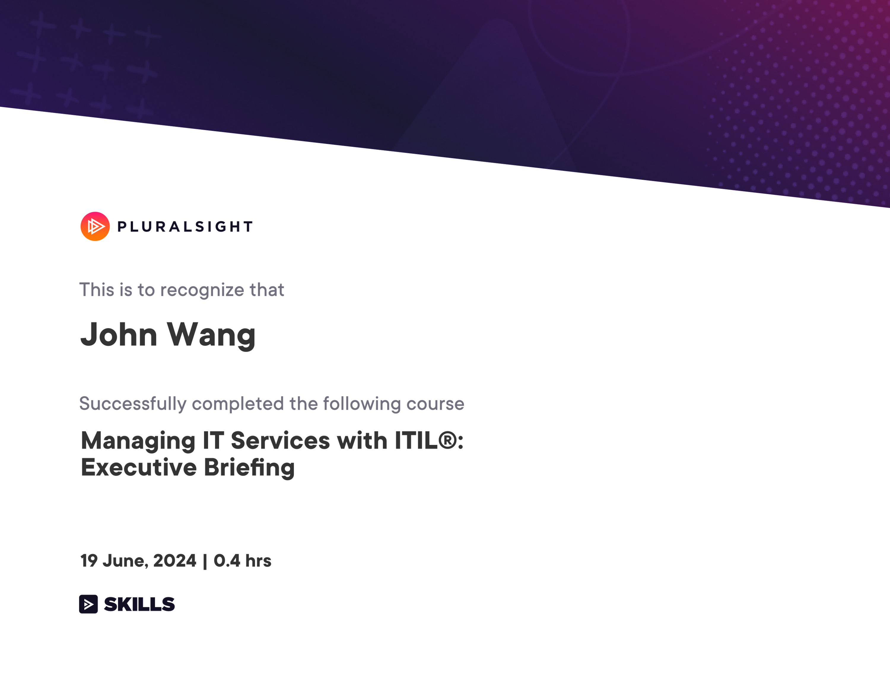

John Wang's Site
Home
Innovation
Patents (3)
Presentations (2)
Publications (2)
Awards
API (7)
Certificates
API (11)
Algorithms (3)
Appreciation (1)
Artificial Intelligence (111)
Artificial Intelligence: ML (15)
Board of Directors (5)
Cloud Computing (42)
Customer Service (5)
Data Science (7)
Design Thinking (4)
DevOps (13)
Human Resources (12)
Information Technology (1)
Strategy (1)
Managing IT Services with ITIL®: Executive Briefing from Pluralsight by Chris Ward
Leadership (11)
Management (26)
Management Consulting (7)
Marketing (2)
Nonprofit (9)
Observability and Reliability (14)
Personal Development (9)
Product Design (2)
Product Management (21)
Programming (41)
Programming: QA (5)
Scrum (21)
Security: AI (15)
Security: AppSec (57)
Security: Compliance (7)
Security: IDSec (20)
Security: InfoSec (48)
Security: SecOps (1)
Sports (4)
Strategy (7)
TED Talks (7)
John Wang's Site
Certificates
Information Technology (1)
John's Information Technology Certificates
Strategy
Managing IT Services with ITIL®: Executive Briefing from Pluralsight by Chris Ward
Strategy (1)
Managing IT Services with ITIL®: Executive Briefing from Pluralsight by Chris Ward

« Previous
Next »